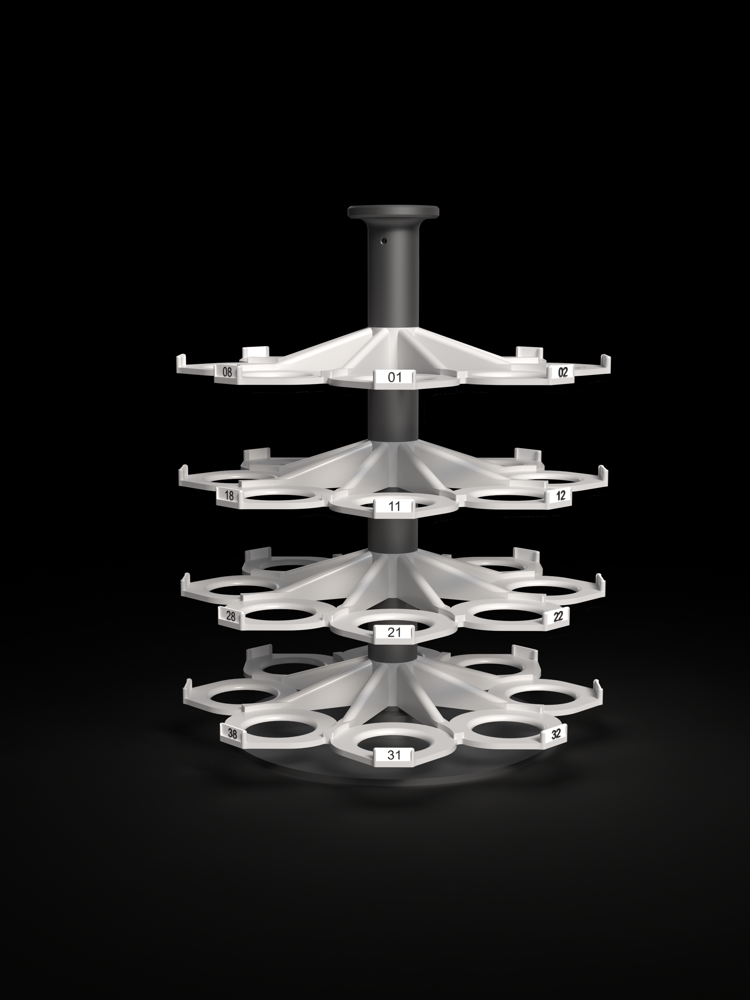
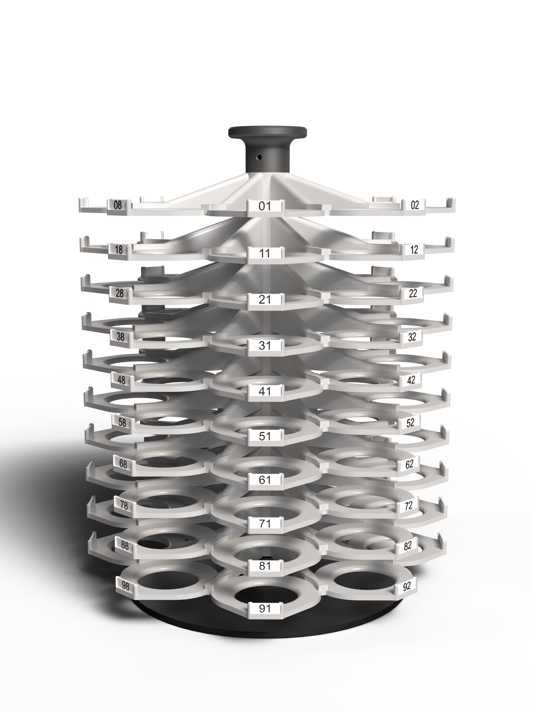
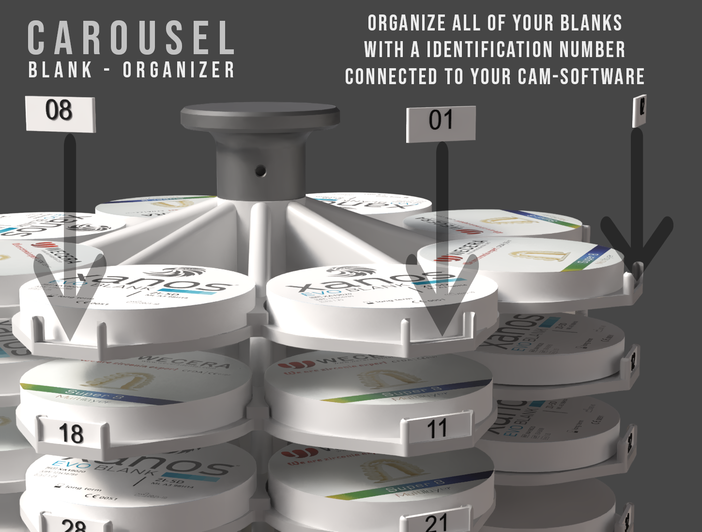

Carousel Blank-Organizer
Online Handbuch
Lagerung gebrauchter Scheiben mit dem Carousel-System

Carousel Blank-Organizer im Einsatz neben der Fräsmaschine
Das Carousel-System wurde als praktische Lösung zur Optimierung der Verwaltung gebrauchter Scheiben in zahntechnischen Laboren entwickelt. In vielen Arbeitsumgebungen herrscht eine erhebliche Unordnung bei der Lagerung von teilweise bearbeiteten Scheiben, was deren Identifikation und spätere Wiederverwendung erschwert.
Jede eingesetzte Scheibe wird während des CAM-Prozesses mit einer eindeutigen Nummer gekennzeichnet, in der Software registriert und einer festen Position im Carousel zugeordnet.
Auf einen Blick
Intro Kit (32 Blanks)
4 Lagen – 32 Positionen
Full Kit (80 Blanks)
10 Lagen – 80 Positionen
Rückverfolgbarkeit & Zugriff
Nummerierung und Spaltenlogik
Millbox Integration
Magazin in der CAM-Software umbenennen
Carousel Blank-Organizer
Manuale Online
Magazzino cialde usate con il sistema Carousel
Carousel Blank-Organizer accanto alla fresatrice
Il sistema Carousel nasce come risposta concreta all'esigenza di ottimizzare la gestione delle cialde usate nei laboratori odontotecnici. In molti ambienti si riscontra una notevole disorganizzazione nello stoccaggio delle cialde parzialmente lavorate, con conseguenti difficoltà nella loro identificazione e nel successivo riutilizzo.
Durante il processo CAM, ogni cialda caricata viene identificata con un numero univoco, registrata nel software e associata a una posizione fissa all'interno del Carousel.
Panoramica
Intro Kit (32 Blanks)
4 dischi – 32 posizioni
Full Kit (80 Blanks)
10 dischi – 80 posizioni
Tracciabilità & Accesso
Numerazione e logica per colonne
Millbox Integration
Rinominare il magazzino nel software CAM
Carousel Blank-Organizer
Online Manual
Storage of used blanks with the Carousel system
Carousel Blank-Organizer next to the milling machine
The Carousel system was developed as a practical solution to optimize the management of used blanks in dental laboratories. In many work environments there is considerable disorganization in the storage of partially processed blanks, making their identification and subsequent reuse difficult.
During the CAM process, each blank loaded is identified with a unique number, registered in the software and assigned to a fixed position inside the Carousel.
Overview
Intro Kit (32 Blanks)
4 layers – 32 positions
Full Kit (80 Blanks)
10 layers – 80 positions
Traceability & Access
Numbering and column logic
Millbox Integration
Renaming the magazine in the CAM software
System
Intro Kit (32 Blanks)
Basisversion mit 4 Lagen für 32 Positionen

Intro Kit, Studioansicht
Eigenschaften
- 4 Lagen für insgesamt 32 Scheiben
- Jede Position ist eindeutig nummeriert (01–32)
- Minimaler Platzbedarf: Ø 40 cm × H 55 cm
- Kompakte, platzsparende Bauweise für kleinere Labore

CAROUSEL Intro Kit neben der Fräsmaschine
Positionsnummerierung
Die Positionen sind spaltenweise angeordnet, zum Beispiel Spalte 1: 01 – 11 – 21 – 31.
→ Zum Full Kit (80 Blanks)
Sistema
Intro Kit (32 Blanks)
Versione base con 4 dischi per 32 posizioni
Intro Kit, vista studio
Caratteristiche
- 4 dischi per un totale di 32 cialde
- Ogni posizione è identificata con un numero univoco (01–32)
- Ingombro minimo: Ø 40 cm × H 55 cm
- Struttura compatta e salvaspazio, ideale per laboratori più piccoli
CAROUSEL Intro Kit accanto alla fresatrice
Numerazione delle posizioni
Le posizioni seguono un ordine per colonne, ad esempio colonna 1: 01 – 11 – 21 – 31.
→ Vai al Full Kit (80 Blanks)
System
Intro Kit (32 Blanks)
Base version with 4 layers for 32 positions
Intro Kit, studio view
Features
- 4 layers for a total of 32 blanks
- Each position is uniquely numbered (01–32)
- Minimal footprint: Ø 40 cm × H 55 cm
- Compact, space-saving design for smaller labs
CAROUSEL Intro Kit next to the milling machine
Position numbering
Positions follow a vertical column logic, e.g. column 1: 01 – 11 – 21 – 31.
→ Go to Full Kit (80 Blanks)
System
Full Kit (80 Blanks)
Komplettversion mit 10 Lagen für 80 Positionen

Full Kit, Studioansicht
Eigenschaften
- 10 Lagen für insgesamt 80 Scheiben
- Jede Position ist eindeutig nummeriert (01–80)
- Gleicher minimaler Platzbedarf wie das Intro Kit: Ø 40 cm × H 55 cm
- Maximale Kapazität bei unverändertem Stellplatz
CAROUSEL Full Kit neben der Fräsmaschine
Positionsnummerierung
Die Positionen folgen einer vertikalen Spaltenlogik zur einfachen Auffindbarkeit, zum Beispiel:
- Spalte 1: 01 – 11 – 21 – 31 – 41 – 51 – 61 – 71
- Spalte 2: 02 – 12 – 22 – 32 – 42 – 52 – 62 – 72
- … usw.
→ Zur Bedienung & Rückverfolgbarkeit
Sistema
Full Kit (80 Blanks)
Versione completa con 10 dischi per 80 posizioni
Full Kit, vista studio
Caratteristiche
- 10 dischi per un totale di 80 cialde
- Ogni posizione è identificata con un numero univoco (01–80)
- Stesso ingombro minimo del Kit Intro: Ø 40 cm × H 55 cm
- Capacità massima a parità di spazio occupato
CAROUSEL Full Kit accanto alla fresatrice
Numerazione delle posizioni
Le posizioni seguono una logica ordinata per colonna verticale, ad esempio:
- Colonna 1: 01 – 11 – 21 – 31 – 41 – 51 – 61 – 71
- Colonna 2: 02 – 12 – 22 – 32 – 42 – 52 – 62 – 72
- … e così via.
→ Vai a Funzionamento & Tracciabilità
System
Full Kit (80 Blanks)
Complete version with 10 layers for 80 positions
Full Kit, studio view
Features
- 10 layers for a total of 80 blanks
- Each position is uniquely numbered (01–80)
- Same minimal footprint as the Intro Kit: Ø 40 cm × H 55 cm
- Maximum capacity within the same footprint
CAROUSEL Full Kit next to the milling machine
Position numbering
Positions follow a vertical column logic for easy retrieval, for example:
- Column 1: 01 – 11 – 21 – 31 – 41 – 51 – 61 – 71
- Column 2: 02 – 12 – 22 – 32 – 42 – 52 – 62 – 72
- … and so on.
→ Go to Operation & Traceability
Bedienung
Rückverfolgbarkeit & Zugriff
So funktioniert die tägliche Arbeit mit dem Carousel
Jede Scheibe erhält eine Identifikationsnummer, die mit dem CAM-Archiv verbunden ist
Rückverfolgbarkeit der Scheiben
Während des CAM-Prozesses wird jede eingesetzte Scheibe mit einer eindeutigen Nummer (von 01 bis 80) gekennzeichnet. Diese Nummer wird in der Software registriert und einer bestimmten Position im Carousel zugeordnet.
Nahaufnahme der nummerierten Positionen
Logische und sequenzielle Ordnung
Die Positionen im Carousel folgen einer vertikalen Spaltenlogik zur einfachen Auffindbarkeit. Beispiel:
- Spalte 1: 01 – 11 – 21 – 31 – 41 – 51 – 61 – 71
- Spalte 2: 02 – 12 – 22 – 32 – 42 – 52 – 62 – 72
- … usw.
Schneller und präziser Zugriff
Wenn die CAM-Software eine bestimmte Scheibe für die bevorstehende Arbeit vorschlägt, sieht der Bediener die zugewiesene Nummer und dreht das Carousel einfach zur entsprechenden Position.
Vorteile im Überblick
- Zeitersparnis bei der täglichen Arbeit
- Abfallreduzierung durch bessere Wiederverwendung
- Steigerung der Produktivität im zahntechnischen Labor
→ Zur Millbox Integration
Funzionamento
Tracciabilità & Accesso
Il lavoro quotidiano con il Carousel
Ogni cialda riceve un codice identificativo collegato all'archivio CAM
Tracciabilità delle cialde
Durante il processo CAM, ogni cialda caricata viene identificata con un numero univoco (da 01 a 80). Questo numero viene registrato nel software e associato a una posizione specifica all'interno del Carousel.
Vista ravvicinata delle posizioni numerate
Ordine logico e sequenziale
Le posizioni nel Carousel seguono una logica ordinata per colonna verticale, facilitando la localizzazione. Ad esempio:
- Colonna 1: 01 – 11 – 21 – 31 – 41 – 51 – 61 – 71
- Colonna 2: 02 – 12 – 22 – 32 – 42 – 52 – 62 – 72
- … e così via.
Accesso rapido e preciso
Quando il software CAM propone una cialda specifica idonea al lavoro da eseguire, l'operatore visualizza il numero assegnato e ruota semplicemente il Carousel fino alla posizione corrispondente.
Vantaggi in sintesi
- Risparmio di tempo nel lavoro quotidiano
- Riduzione degli sprechi grazie a un miglior riutilizzo
- Aumento della produttività nel laboratorio odontotecnico
→ Vai a Millbox Integration
Operation
Traceability & Access
How daily work with the Carousel works

Every blank gets an identification number linked to the CAM archive
Traceability of the blanks
During the CAM process, each blank loaded is marked with a unique number (from 01 to 80). This number is registered in the software and assigned to a specific position inside the Carousel.
Close-up of the numbered positions
Logical and sequential order
Positions in the Carousel follow a vertical column logic for easy retrieval. For example:
- Column 1: 01 – 11 – 21 – 31 – 41 – 51 – 61 – 71
- Column 2: 02 – 12 – 22 – 32 – 42 – 52 – 62 – 72
- … and so on.
Fast and precise access
When the CAM software suggests a specific blank suitable for the upcoming job, the operator sees the assigned number and simply rotates the Carousel to the corresponding position.
Benefits at a glance
- Time savings in daily work
- Waste reduction through better reuse
- Increased productivity in the dental lab
→ Go to Millbox Integration
Millbox Integration
Magazin in der Millbox-CAM-Software umbenennen
3 Wege, das Carousel-Magazin korrekt zu benennen und zu verknüpfen
Damit die Positionsnummern des Carousel korrekt mit der Millbox-CAM-Software zusammenarbeiten, muss das Magazin dort passend benannt werden. Es gibt dafür drei verschiedene Vorgehensweisen, die je nach Arbeitsablauf im Labor genutzt werden können.
Methode 1
Kurzbeschreibung folgt – siehe Video für die Schritt-für-Schritt-Anleitung.
Methode 2
Kurzbeschreibung folgt – siehe Video für die Schritt-für-Schritt-Anleitung.
Methode 3
Kurzbeschreibung folgt – siehe Video für die Schritt-für-Schritt-Anleitung.
Millbox Integration
Rinominare il magazzino nel software CAM Millbox
3 modi per rinominare e collegare correttamente il magazzino Carousel
Affinché la numerazione delle posizioni del Carousel funzioni correttamente con il software CAM Millbox, il magazzino deve essere rinominato in modo appropriato. Esistono tre metodi diversi, utilizzabili a seconda del flusso di lavoro del laboratorio.
Opzione 1
Descrizione in arrivo – vedere il video per la procedura passo-passo.
Opzione 2
Descrizione in arrivo – vedere il video per la procedura passo-passo.
Opzione 3
Descrizione in arrivo – vedere il video per la procedura passo-passo.
Millbox Integration
Renaming the magazine in the Millbox CAM software
3 ways to correctly name and link the Carousel magazine
For the Carousel's position numbers to work correctly with the Millbox CAM software, the magazine needs to be named accordingly. There are three different approaches, which can be used depending on the lab's workflow.
Option 1
Description to follow – see video for the step-by-step guide.
Option 2
Description to follow – see video for the step-by-step guide.
Option 3
Description to follow – see video for the step-by-step guide.
Modularität
Erweiterbarkeit
Vom Intro Kit zum vollen Full Kit
Modularität des Systems
Das Carousel ist in zwei Versionen erhältlich:
- Basisversion (Intro Kit, 32 Blanks) mit 4 Lagen für insgesamt 32 Scheiben
- Komplettversion (Full Kit, 80 Blanks) mit 10 Lagen für insgesamt 80 Scheiben
Schrittweise Erweiterung
Die Basisversion (4 Lagen – 32 Scheiben) kann mit modularen Einzellagen erweitert werden, wobei jede zusätzliche Lage die Kapazität um 8 Scheiben erhöht. Es können bis zu 6 zusätzliche Lagen hinzugefügt werden, wodurch die maximale Kapazität von 80 Scheiben erreicht wird:
- 32 Scheiben (Intro Kit)
- + 48 Scheiben (6 zusätzliche Lagen)
- = 80 Scheiben (Full Kit)
Modularità
Espandibilità
Dal Kit Intro al Full Kit completo
Modularità del sistema
Il Carousel è disponibile in due versioni:
- Versione base (Intro Kit, 32 Blanks) con 4 dischi per un totale di 32 cialde
- Versione completa (Full Kit, 80 Blanks) con 10 dischi per un totale di 80 cialde
Espansione graduale
Alla versione base (4 dischi – 32 cialde) è possibile aggiungere dischi singoli modulari, ognuno dei quali incrementa la capacità di 8 cialde. È possibile aggiungere fino a 6 dischi supplementari, raggiungendo così la capacità massima di 80 cialde:
- 32 cialde (Intro Kit)
- + 48 cialde (6 dischi aggiuntivi)
- = 80 cialde (Full Kit)
Modularity
Expandability
From the Intro Kit to the full Full Kit
System modularity
The Carousel is available in two versions:
- Base version (Intro Kit, 32 Blanks) with 4 layers for a total of 32 blanks
- Complete version (Full Kit, 80 Blanks) with 10 layers for a total of 80 blanks
Step-by-step expansion
The base version (4 layers – 32 blanks) can be expanded with modular individual layers, each additional layer increasing capacity by 8 blanks. Up to 6 additional layers can be added, reaching the maximum capacity of 80 blanks:
- 32 blanks (Intro Kit)
- + 48 blanks (6 additional layers)
- = 80 blanks (Full Kit)
Kontakt
Kontakt & Support
Ihr Ansprechpartner für den Carousel Blank-Organizer
DENTAG ITALIA SRL
Via L. Negrelli 4
39100 Bozen (BZ)
Telefon: +39 0471 256 233
E-Mail: info@dentag-italia.com
Web: www.dentag-italia.com
Contatti
Contatti & Assistenza
Il vostro referente per il Carousel Blank-Organizer
DENTAG ITALIA SRL
Via L. Negrelli 4
39100 Bolzano (BZ)
Telefono: +39 0471 256 233
E-mail: info@dentag-italia.com
Web: www.dentag-italia.com
Contact
Contact & Support
Your contact for the Carousel Blank-Organizer
DENTAG ITALIA SRL
Via L. Negrelli 4
39100 Bolzano (BZ), Italy
Phone: +39 0471 256 233
Email: info@dentag-italia.com
Web: www.dentag-italia.com